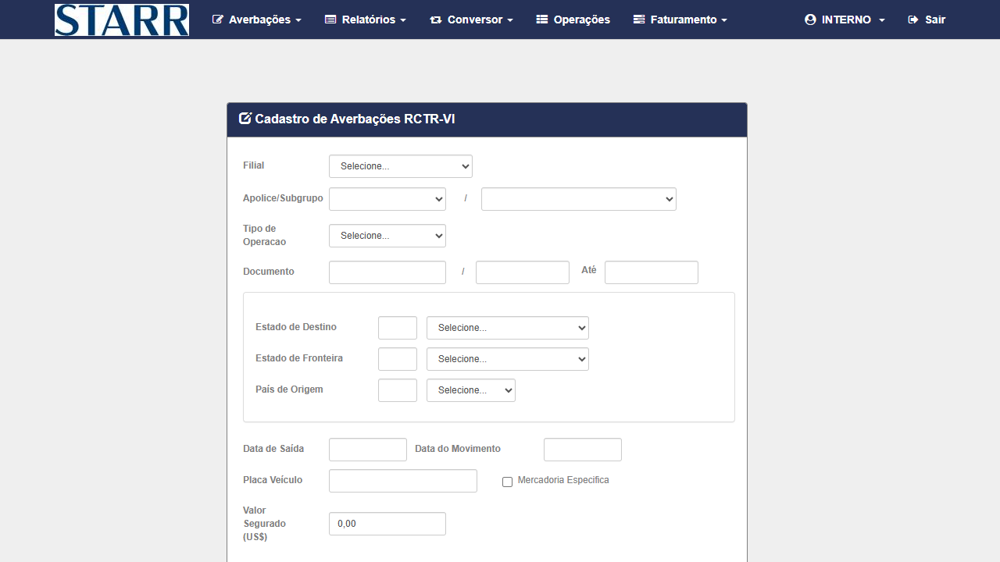
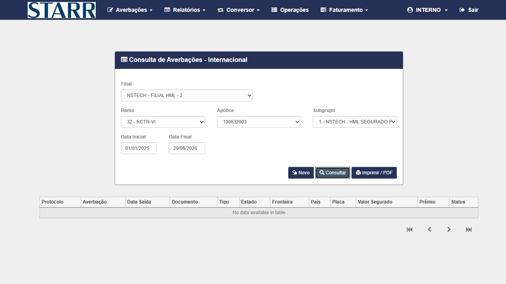
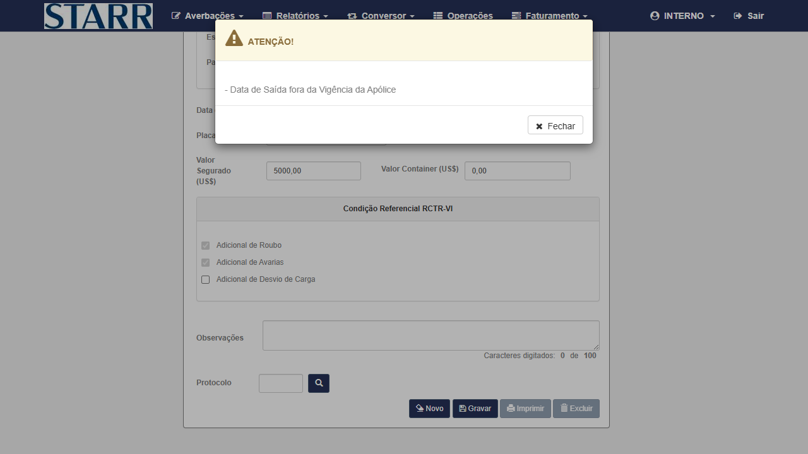

Contexto do Bug
Causa raiz: O módulo de Averbações Internacional RCT-VI possuía um bloco de código que, ao carregar o resultado de um callback, exibia e marcava automaticamente o checkbox "Adicional de Avarias" (lbl_i_tar_adl_avr) mesmo quando o campo deveria permanecer oculto. Quando o usuário tentava editar a averbação, o sistema detectava o adicional marcado e retornava "Apólice não permite Avarias", bloqueando a gravação.
Fix aplicado: Remoção do bloco !visible→show e adição de guard is(visible) no JS do AverbacaoInternacional/AverbacaoRCTVI. O label agora permanece oculto e desmarcado após gravar, e a edição subsequente não é rejeitada.
Severidade: High (P2) — bloqueava fluxo de edição de averbações RCT-VI na STARR.
Massa de Dados Confirmada (Ivan HML 25/06/2026)
| Campo | Valor |
|---|---|
| Ambiente | STARR HML — https://starr-hml-faturamento.nsseg.com.br/alfa/citnet/ |
| Credencial | INTERNO / 11 |
| Filial | NSTECH - FILIAL HML - 2 |
| Apólice | 100632002 |
| Tipo Importação | Selecionar na tela RCT-VI |
⚠ CTs 002 e 003 BLOQUEADOS por limitação de massa HML. Todas as apólices STARR HML disponíveis (100632002, 100632003, 100632004) permitem Avarias — não há apólice onde o label deva ficar oculto. Adicionalmente, a vigência dessas apólices não cobre a data atual (29/06/2026), impossibilitando gravar nova averbação. CT-002 e CT-003 requerem renovação de apólice HML ou criação de apólice sem permissão de Avarias.
Grupo 1 — Fluxo Principal RCT-VI · Perfil INTERNO
CT-7547-001
PASSOU
P2
Reteste
INTERNO
Login e acesso ao módulo Averbações Internacional RCT-VI
▶
| Campo | Valor |
|---|---|
| Pré-condição | Servidor STARR ALFA HML disponível (HTTP 200) |
| Ambiente | https://starr-hml-faturamento.nsseg.com.br/alfa/citnet/ |
| Dado de entrada | Usuário: INTERNO | Senha: 11 |
| Critério de aceite | Menu de Averbações acessível; opção RCT-VI disponível |
Passos
- Acessar a URL do CITNET STARR ALFA HML
- Preencher Usuário: INTERNO e Senha: 11
- Clicar em Entrar (sem selecionar filial)
- Verificar exibição do menu com opção de Averbações
- Clicar em Averbações → Internacional → RCT-VI
- Confirmar que a tela "Averbação Internacional - RCTR-VI" foi carregada
✅ PASSOU — Login com INTERNO/11 realizado com sucesso. Formulário RCT-VI carregado corretamente com todos os campos disponíveis. Filial NSTECH-FILIAL HML-2 pré-selecionada pelo sistema. (29/06/2026)
Evidências

EV1 — Login INTERNO/11 no CITNET STARR ALFA HML

EV2 — Tela "Cadastro de Averbações RCTR-VI" carregada com campos disponíveis
CT-7547-002
BLOQUEADO
P1
Reteste — ponto do bug
INTERNO
Criar averbação RCT-VI e verificar que "Adicional de Avarias" NÃO é auto-marcado
▶
| Campo | Valor |
|---|---|
| Pré-condição | Usuário logado como INTERNO; tela RCT-VI aberta; filial 2 / apólice 100632002 |
| Dados de entrada | Filial: NSTECH - FILIAL HML - 2 | Apólice: 100632002 | Tipo Importação |
| Bug original | Após gravar, checkbox "Adicional de Avarias" ficava marcado automaticamente sem ação do usuário |
| Critério de aceite | Averbação gravada com sucesso; campo "Adicional de Avarias" (lbl_i_tar_adl_avr) permanece oculto e desmarcado após gravação |
Passos
- Na tela RCT-VI, selecionar Filial: NSTECH - FILIAL HML - 2
- Selecionar Apólice: 100632002
- Preencher campos obrigatórios (documento, estados, datas, placa, valor)
- Clicar em Gravar
- Aguardar confirmação de gravação
- Verificar estado do checkbox "Adicional de Avarias": deve estar oculto ou desmarcado
- Capturar screenshot mostrando o campo após gravar
- Via
browser_evaluate: confirmardocument.getElementById('lbl_i_tar_adl_avr').style.displayénoneou elemento inexistente/desmarcado
🔒 BLOQUEADO — Massa insuficiente: todas as apólices disponíveis no HML STARR (100632002, 100632003, 100632004) possuem "Adicional de Avarias" habilitado — o label
lbl_i_tar_adl_avr está sempre visível e checked+disabled. Não existe apólice onde o campo deva ficar oculto. Requer renovação ou criação de apólice sem permissão de Avarias no ambiente HML. (29/06/2026)
CT-7547-003
BLOQUEADO
P1
Reteste — ponto do bug
INTERNO
Editar averbação RCT-VI gravada — não deve ser rejeitada por "Apólice não permite Avarias"
▶
| Campo | Valor |
|---|---|
| Pré-condição | Averbação criada no CT-7547-002 (dependente) |
| Bug original | Ao editar e gravar novamente, o sistema retornava "ATENÇÃO! - Apólice não permite Avarias" e bloqueava a gravação |
| Critério de aceite | Edição aceita; modal de confirmação exibido SEM mensagem de "Avarias"; averbação atualizada com sucesso |
Passos
- Localizar a averbação criada no CT-002 (por protocolo ou número de documento)
- Abrir a averbação para edição
- Clicar em Gravar sem alterar dados
- Verificar resultado: deve exibir confirmação de sucesso
- Confirmar que modal "Apólice não permite Avarias" NÃO apareceu
🔒 BLOQUEADO — Dependente do CT-002 (bloqueado). Adicionalmente, vigência da apólice 100632003 não cobre a data atual 29/06/2026 — erro "Data de Saída fora da Vigência da Apólice" impede gravar qualquer averbação nova. Consulta de averbações existentes retornou No data available (nenhum protocolo encontrado no período 01/01/2025 a 29/06/2026). Requer apólice com vigência ativa no HML. (29/06/2026)
Evidências do Bloqueio

EV4 — Consulta Internacional RCTR-VI: "No data available" — sem averbações existentes para apólice 100632003 (01/01/2025 a 29/06/2026)

EV5 — Erro "Data de Saída fora da Vigência da Apólice" ao tentar gravar com data 29/06/2026